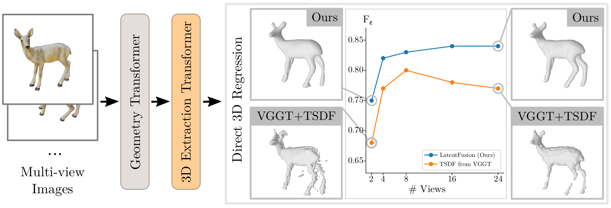
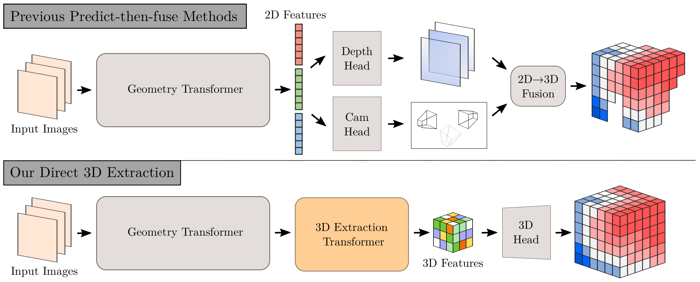
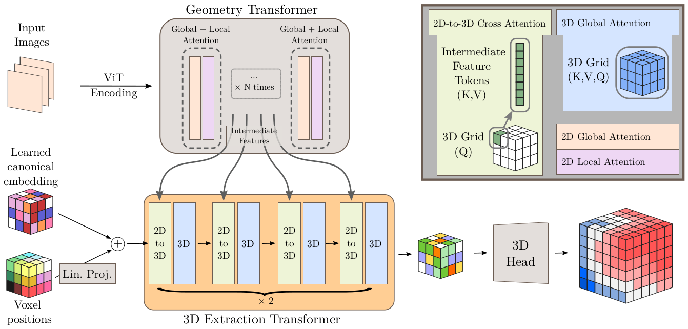
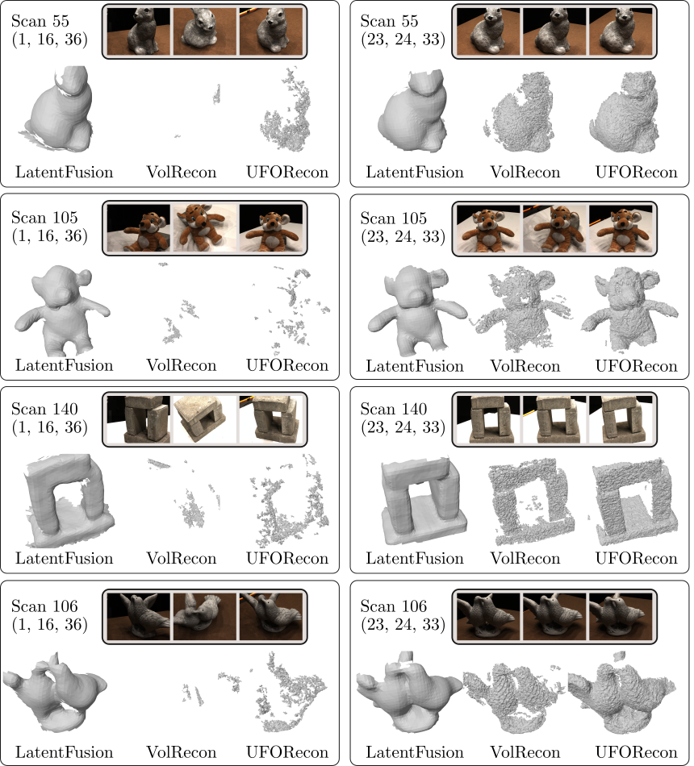

LatentFusion: Decoding Consolidated 3D Geometry from Feed-forward Geometry Transformer Latents
-
Laura Fink
FAU Erlangen-Nürnberg
-
Linus Franke
Inria, Université Côte d’Azur
FAU Erlangen-Nürnberg -
George Kopanas
Google DeepMind
-
Marc Stamminger
FAU Erlangen-Nürnberg
-
Peter Hedman
work done while at
Google DeepMind

Example with two input views.
Abstract
We propose a feed-forward method for dense Signed Distance Field (SDF) regression from unstructured image collections in less than three seconds, without camera calibration or post-hoc fusion. Our key insight is that the intermediate feature space of pretrained multi-view feed-forward geometry transformers already encodes a powerful joint world representation; yet, existing pipelines discard it, routing features through per-view prediction heads before assembling 3D geometry post-hoc, which discards valuable completeness information and accumulates inaccuracies.
We instead perform 3D extraction directly from features of feed-forward geometry transformer via learned volumetric extraction: voxelized canonical embeddings that progressively absorb multi-view geometry information through interleaved cross- and self-attention into a structured volumetric latent grid. A simple convolutional decoder then maps this grid to a dense SDF. We additionally propose a scalable, validity-aware supervision scheme directly using SDFs derived from depth maps or 3D assets, tackling practical issues like non-watertight meshes. Our approach yields complete and well-defined distance values across sparse- and dense-view settings and demonstrates geometrically plausible completions.
Overview
LatentFusion directly regresses a 3D representation from the latent space of a multi-view geometry transformer, bypassing per-view prediction and post-hoc fusion. This, compared to VGGT [Wang, 2025] using TSDF fusion, yields improved surface completeness under sparse views (left, 2 views) and avoids error accumulation reducing details at scale (right, 24 views), also reflected in the F-score curves across view counts (center).

Dimensionality of Extraction
Common pipelines like VGGT [Wang, 2025] (top) route transformer features through per-view 2D decoder heads, discarding the joint multi-view representation before 3D assembly using e.g. TSDF fusion [Millane, 2024] or Poisson surface reconstruction [Kazhdan, 2006]. We instead extract dense 3D features directly from the transformer's intermediate feature space, preserving the full multi-view information.

Architecture
The geometry transformer processes tokenized input images, yielding a list of 2D intermediate features extracted from different stages. The extraction transformer (orange) leverages 2D-to-3D cross attention (green) to absorb the 3D information into features of the learned canonical embedding, and distributes this information via 3D self-attention (blue) throughout the volumetric latent. The head decodes the resulting structured latent into a dense SDF grid.

Comparison to Predict-Then-Fuse Methods
Comparison to Generalizable SDF predictors
We compare to other generalizable distance field prediction methods, VolRecon [Ren 2023] and UFOrecon [Na 2024], on standard and challenging view sets (as proposed by UFOrecon).

Sparse View Setting
LatentFusion produces plausible reconstructions from only two input views, extrapolating the predicted SDF in unboserved regions.
Varying level sets
LatentFusion predicts well-behaved SDF values throughout the volume, visualized by extracting level sets from varying isovalues.
Citation
Acknowledgements
We would like to thank all members of the Visual Computing Lab Erlangen for the fruitful discussions.
The authors gratefully acknowledge the scientific support and HPC resources provided by the National High Performance Computing Center of the Friedrich-Alexander-Universität Erlangen-Nürnberg (NHR@FAU) under the project b212dc, b175dc, and b201dc. NHR funding is provided by federal and Bavarian state authorities. NHR@FAU hardware is partially funded by the German Research Foundation (DFG) – 440719683.
The website template was adapted from VET, who borrowed from Zip-NeRF, who borrowed from Michaël Gharbi and Ref-NeRF. Image sliders are from BakedSDF.
References
[Wang 2025] Wang, J., Chen, M., Karaev, N., Vedaldi, A., Rupprecht, C., Novotny, D.: VGGT: Visual geometry grounded transformer. In: Proceedings of the Computer Vision and Pattern Recognition Conference. pp. 5294–5306 (2025).
[Na 2024] Na, Y., Kim, W.J., Han, K.B., Ha, S., Yoon, S.E.: Uforecon: Generalizable sparse-view surface reconstruction from arbitrary and unfavorable sets. In: Proceedings of the IEEE/CVF Conference on Computer Vision and Pattern Recognition. pp. 5094–5104 (2024).
[Millane 2024] Millane, A., Oleynikova, H., Wirbel, E., Steiner, R., Ramasamy, V., Tingdahl, D., Siegwart, R.: nvblox: Gpu-accelerated incremental signed distance field mapping. In: 2024 IEEE International Conference on Robotics and Automation (ICRA). pp. 2698–2705. IEEE (2024).
[Ren 2023] Ren, Y., Wang, F., Zhang, T., Pollefeys, M., Süsstrunk, S.: Volrecon: Volume rendering of signed ray distance functions for generalizable multi-view reconstruction. In: Proceedings of the IEEE/CVF Conference on Computer Vision and Pattern Recognition. pp. 16685–16695 (2023).
[Kazhdan 2006] Kazhdan, M., Bolitho, M., Hoppe, H.: Poisson surface reconstruction. In: Proceedings of the fourth Eurographics symposium on Geometry processing. vol. 7 (2006).